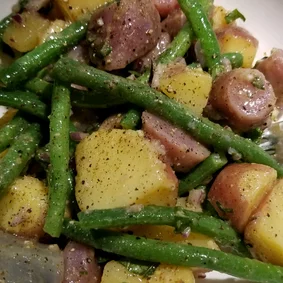

Green Bean and Potato Salad

Description
A twist on potato salad. Green beans and potatoes are served in a Dijon mustard and balsamic vinaigrette.
Ingredients
- 1 ½ pounds red potatoes
- ¾ pound fresh green beans, trimmed and snapped
- ¼ cup chopped fresh basil
- 1 small red onion, chopped
- salt and pepper to taste
- ¼ cup balsamic vinegar
- 2 tablespoons Dijon mustard
- 2 tablespoons fresh lemon juice
- 1 clove garlic, minced
- 1 dash Worcestershire sauce
- ½ cup extra virgin olive oil
Directions
- Place the potatoes in a large pot, and fill with about 1 inch of water. Bring to a boil, and cook for about 15 minutes, or until potatoes are tender. Throw in the green beans to steam after the first 10 minutes. Drain, cool, and cut potatoes into quarters. Transfer to a large bowl, and toss with fresh basil, red onion, salt and pepper. Set aside.
- In a medium bowl, whisk together the balsamic vinegar, mustard, lemon juice, garlic, Worcestershire sauce and olive oil. Pour over the salad, and stir to coat. Taste and season with additional salt and pepper if needed.